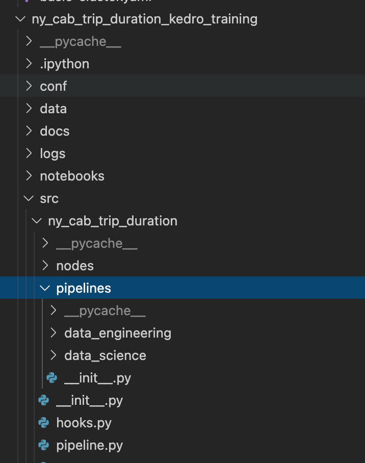
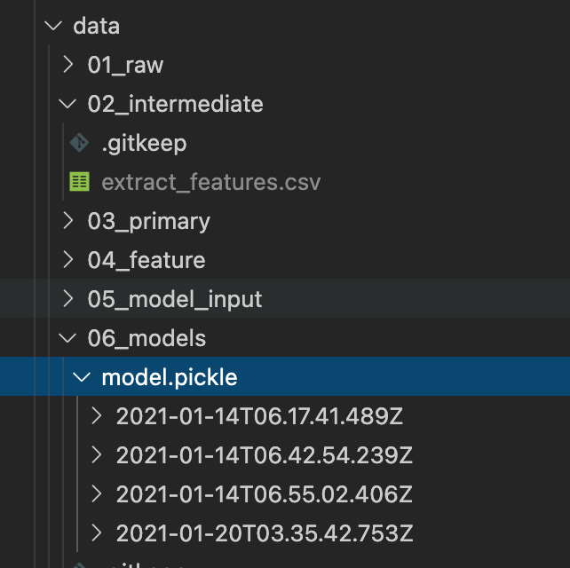

ML model deployment in production is still an area that lacks conformity, nomenclature, and patterns. Aside from few technology companies who started the journey early on, for late adopters of ML practices, it’s pretty much the wild west when it comes to the standards of model deployment.
Some other challenges include the culture of data science teams inside the organization, productionizing the process of model release, data scientists by nature comes from an academic and research background, and tend to focus more on perfecting the quality of predictions and classifications by running different experiments, tracking them, and lowering cost functions, etc .., while the data engineering realm tend to focus on streamlining the process of delivery of models to production. Here is a great article by Assaf Pinhasi about the cultural gap in data science teams.
Traditional approach
The most common practice I have seen in different projects and organizations tend to be :

To run all the experiments needed for data explorations, model tuning, tools or platforms like Jupyter Notebook, Databricks notebooks and others are used by data scientists, once the model is trained, turned with the right parameters, and saved into artifact ( like a pickle file ), the code get committed to a git repository, and the work of data engineering begins.
from that point on, a data engineer needs to :
- Build a data pipeline by creating the training and automation scripts ( train.py and predict.py)
- Design a deployment strategy like a micro-services architecture with different services : inference, data preparation…
- Build a CI/CD pipeline with the right ML-driven automation tests
- Design model monitoring to capture concept drift
- Size the right hardware needed to run the inference and the training
The boundaries of this collaboration between data science and data engineering often feel blurry, leaving room for a lot of “who is supposed to do what”, and in most cases requires data engineers to spend time understanding the steps followed.
The new approach
The idea behind this post is to showcase an example of streamlined ML deployment and training using combination of two ML frameworks: Kedro and cortex.dev with a minimum amount of code
What is Kedro ? Kedro is an open-source Python framework for creating reproducible, maintainable and modular data science code. It borrows concepts from software engineering and applies them to machine-learning code; applied concepts include modularity, separation of concerns and versioning.
What is Cortex? Cortex is an open source platform for large-scale inference workloads, it has the fololwing capabilities : Supports deploying TensorFlow, PyTorch, and other models as realtime or batch APIs.
Ensures high availability with availability zones and automated instance restarts.
Runs inference on on-demand instances or spot instances with on-demand backups.
Autoscales to handle production workloads with support for overprovisioning.
the combination of both tools allow us to implement a new approach that will :
- Shift the data pipeline build to the data science side (kedro)
- Parametrize model training by externalizing inputs like : split the train/test data, algorithms used, learning rates, epochs ( kedro )
- Introduce the notion of nodes and pipelines and data catalogues (kedro)
- Standardize outputs/inputs of nodes and persist results (kedro)
- Guarantee scalability and repeatability : it’s easy to reuse nodes and pipelines for new data sources to create models specific to a similar business unit (kedro)
- Design and build the inference infrastructure (cortex)
- Flexibility to create batch or realtimeAPI endpoints ( cortex )
- ease the management of dependencies ( cortex & kedro )
the new architecture would look something like this :

One of Kedro’s features is to break the ML steps into nodes and pipelines, generally there is a
Data Engineering pipeline : for data processing, feature extraction, normalization, encoding …
Data Science pipeline : Splitting the data to training and test sets, the designing the model(s), evaluation
Cortex on the other hand, takes care of creating and deploying the model generated by Kedro pipeline using a cortex operator, it create a kubernetes cluster in either AWS or GCP using a simple infrastructure description file :
region: us-east-1 instance_type: t2.medium min_instances: 5 max_instances: 10 spot: true
it also creates a load balancer to distribute the inference across all the cluster nodes, and an API gateway to serve the API responses
Example : New York Taxi Trip Duration
I will be using a kaggle dataset that has the following data structure :

we aim to create a model that will predict the trip duration based on the other input features like pick up date, pick up location ( longitude latitude) , drop off location etc …
Considering that we have sizable amount of training data ( 1458645 rows ) and there is no sparsity in the data, or no dimension reduction needed I will use lightgbm for this proof of concept.
Creating Nodes and Pipelines
Nodes are the building blocks of pipelines and represent tasks. Pipelines are used to combine nodes to build workflows, which range from simple machine learning workflows to end-to-end production workflows.
in our case a node will represent tasks like :
- feature extraction : hour of the day, day of the month, month of the year
- Split data : train and test sets
- train model : training using lightgbm
- evaluate model : calculating metrics

Pipeline organises the dependencies and execution order of your collection of nodes, and connects inputs and outputs while keeping your code modular. The pipeline determines the node execution order by resolving dependencies and does not necessarily run the nodes in the order in which they are passed in.
To benefit from Kedro’s automatic dependency resolution, you can chain your nodes into a pipeline, which is a list of nodes that use a shared set of variables.
Here is the code to both pipelines , to run the project , you can change directory to ny_cab_trip_duration_kedro_training, and run the command :
ny_cab_trip_duration_kedro_training$ Kedro run 2021-01-19 19:35:43,309 - kedro.io.data_catalog - INFO - Loading data from `trips_train` (CSVDataSet)... 2021-01-19 19:35:46,316 - kedro.pipeline.node - INFO - Running node: extract_features: extract_features([trips_train]) -> [extract_features] 2021-01-19 19:36:24,834 - numexpr.utils - INFO - Note: NumExpr detected 12 cores but "NUMEXPR_MAX_THREADS" not set, so enforcing safe limit of 8. 2021-01-19 19:36:24,834 - numexpr.utils - INFO - NumExpr defaulting to 8 threads. 2021-01-19 19:39:27,635 - kedro.io.data_catalog - INFO - Saving data
This will run all nodes described above and generate the model file :

Model Deployment With Cortex
The amount of code needed for deployment is really minimal with cortex which makes automation and streamlining deployment extremely easy, in few steps we can have APIs deployed with latest version of the model , here are the steps :
- Build a cloud deployment cluster
- Deploy the model
Build cloud kubernetes cluster:
$cortex cluster up -c basic-cluster.yaml --aws-key REDACTED_AWS_ACCESS_KEY_ID --aws-secret REDACTED_AWS_SECRET_ACCESS_KEY ￮ creating a new s3 bucket: cortex-6a2d11117c ✓ ￮ creating a new cloudwatch log group: cortex ✓ ￮ creating cloudwatch dashboard: cortex ✓ ￮ creating api gateway: cortex ✓ ￮ spinning up the cluster (this will take about 15 minutes) ...
At the end of the execution :
[✔] EKS cluster "cortex" in "us-east-1" region is ready ￮ updating cluster configuration ✓ ￮ configuring networking (this might take a few minutes) ✓ ￮ configuring autoscaling ✓ ￮ configuring logging ✓ ￮ configuring metrics ✓ ￮ starting operator ✓ ￮ waiting for load balancers ............................................................................ ✓ ￮ downloading docker images ✓ cortex is ready! operator: a1bcbfeb26cef442e92bbcd0daffbf42-01a64d913ebbf7b6.elb.us-east-1.amazonaws.com api load balancer: a8e87f75709de4e96bbc3871b8ef9ceb-a6ec41dfe22e0c12.elb.us-east-1.amazonaws.com api gateway: https://g06o0hssmj.execute-api.us-east-1.amazonaws.com
Deploy Model
Note : I have copied the model created by Kedro pipeline to S3 under s3://cortex-6a2d11117c/tmp/
First we create a descriptive YAML of the model:
- name: trip-estimator
kind: RealtimeAPI
predictor:
type: python
path: predictor.py
config:
model: s3://cortex-6a2d11117c/tmp/
monitoring:
model_type: regression
Deploying it is as easy as :
cortex-trip-estimator$ cortex deploy trip_estimator.yaml using aws environment updating trip-estimator (RealtimeAPI) cortex get (show api statuses) cortex get trip-estimator (show api info) cortex logs trip-estimator (stream api logs)
To make sure the API is deployed :
cortex get env realtime api status up-to-date requested last update avg request 2XX aws trip-estimator live 1 1 12m16s - -
Consuming the API
I created a small script to test API :
import requests
endpoint = "https://g06o0hssmj.execute-api.us-east-1.amazonaws.com/trip-estimator"
payload = {
"input1":2.0,
"input2":6.0,
"input3":-73.96147155761719,
"input5":40.774391174316406,
"input6":-73.9537124633789,
"input7":40.77536010742188,
"input8":0.6621858468807331,
"input9":0.007819358973817251,
"input10":0.007788946222373263,
"input11":6.0,
"input12":23.0,
"input13":33.0,
"input14":0.0,
"input15":3.0,
"input16":0.0,
"input17":0.0
}
prediction = requests.post(endpoint, payload)
trip_duration = str(prediction.content,'utf-8')
print("Trip duration is : ", trip_duration)
Run the script :
python consume.py
et voila !
cortex-trip-estimator$ python consume.py Trip duration is : 5.252568735167378
Conclusion
With the growing number of platforms, tools, and frameworks that facilitate the deployment of machine learning, we will eventually get to a point where we have defined patterns, and standards.
The foundation of successful ML projects is having data scientists and data engineers speak the same language, by defining pipelines, tasks, inputs, outputs, at that point it becomes easy to streamline and automate the delivery.